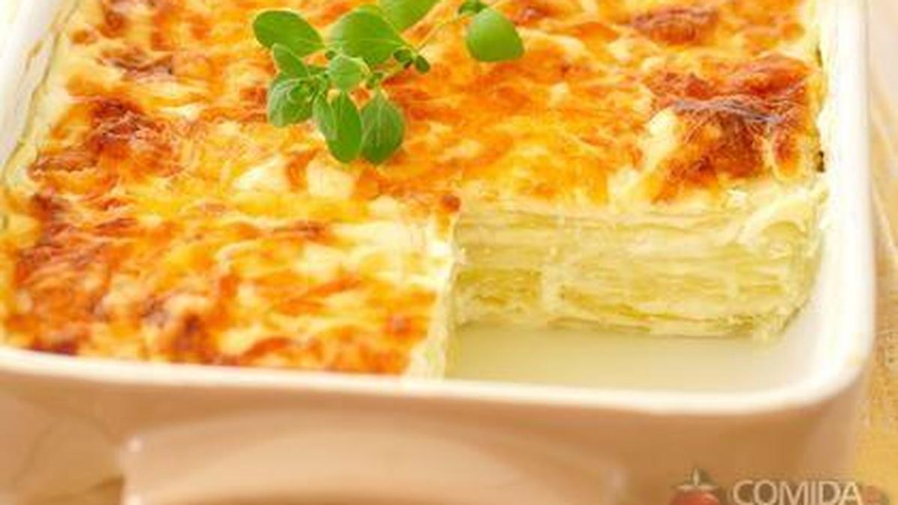

Massas
Lasanha aos quatro queijos

Ingredientes
- 1 xícara (chá) de leite
- 4 latas de creme de leite com soro
- 100 g de parmesão ralado
- 2 copos de requeijão cremoso
- 1 kg de massa de lasanha
- 500 g de mussarela
- 200 g de Catupiry
- 400 g de ricota
Modo de preparo
- Bata creme de leite, requeijão, leite, ricota e Catupiry; reserve. Rale a mussarela.
- No pirex, coloque um pouco de creme, massa, creme, mussarela; repita até preencher, finalizando com creme e parmesão.
- Asse a 180 °C até corar ou começar a ferver.
Observação
A receita original não especifica se a massa é precocinada; use conforme a embalagem.